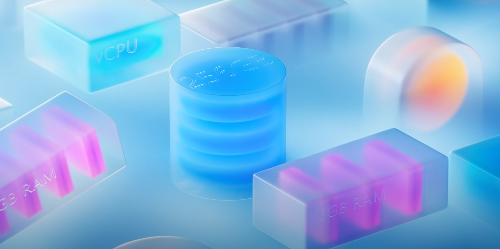

Mydesign Guideline
デザインガイドライン。webを想定して作成するが、他媒体での利用も可能。
テーマ
Creative WorldNew Era
コンセプト（テーマに対する答えor提案）
創造的な水槽AIによって判定される創造物など
ルール
- 創造的であること
- 心が躍る（楽しい）デザイン
- 品位と美しさ
- 全人類がユーザー
- 一貫性を忘れない
デザインヒント
ニューモフィズム + Realforceキーボード +（グミ+すりガラス）Microsoct Fluent Design System

硬いニューモフィズム
-
- 背景色：メインカラーから白に落とした色
- メインカラー：基本一色
- サブカラー：メインカラーから明るくしたもの
- アクセントカラー：基本的には反対色
- ダークカラー：メインカラーから黒に落とした色
- グラデーション：メインカラーを白に寄せた物を2色。左上を白強め、右下を白弱め。
カラー
調和さえ取れていれば必ずしも守る必要はない。
-
-
カラー
基本黒/真っ黒は無し ダークカラーを使用する
-
書体
サンセリフの物を使用する。源ノ角ゴシックor游ゴシックが使用できれば良い。
-
サイズ
大見出し・小見出し・通常文の3つに分ける。
4の倍数でサイズを変更する。
大見出し:24
小見出し:16
通常文:12
フォント
-
カラー
-
- ボタン
- フォーム
UIパーツ
アクションボタンの場合、ボタンの中の文字は動詞にする。
ページ進む、戻る
- リスト
- テーブル
- ヘッダー
- 厚み
-
光と影
上から下deg180(左上から 135° )影色に黒は使わない
-
角
八角形 or 低いR
R3px
上に紙が載っているようなデザイン
| The table header | |
|---|---|
| The table body | with two columns |
薄め
- アイコン 図形
- 黄金比 1:1.618に基本従う。またフィボナッチ数列に従う。（21 13 8 5 3 2 1）
- 余白 余白HTMLを参考にする
- アクション スムーズ・にぎやか・楽しく
- 禁止事項 白と黒のみの画面（画像がある場合や、その他色を抜かざるを得ない場合。または色を抜いたほうが良い場合は可） そのままの基本色